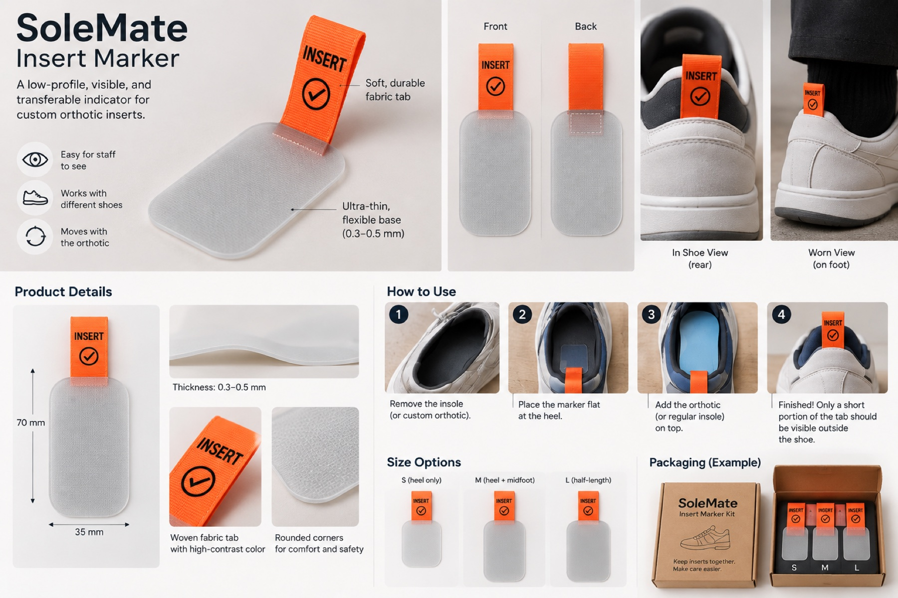
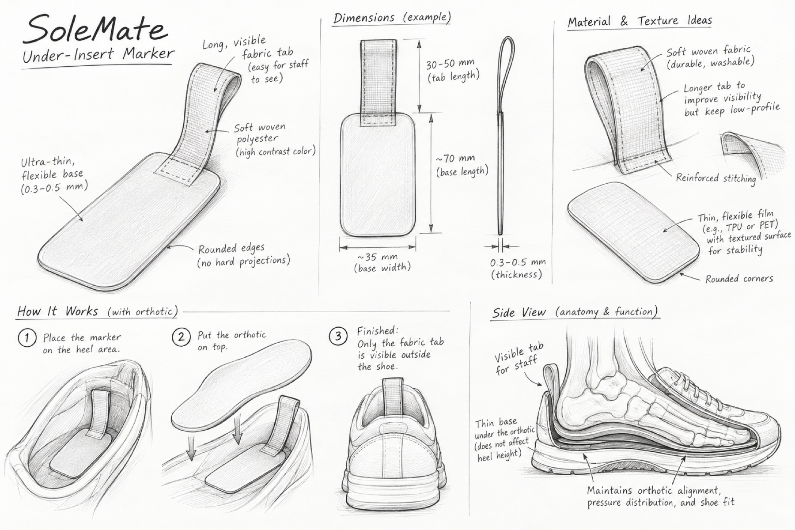

SoleMates
An assistive design project that helps staff notice and transfer custom orthotics when children change shoes.
See the marker concepts
The invisible insert
In collaboration with The Center for Discovery, the team mapped the shoe-change routine to find where an orthotic can blend into the shoe and be left behind.
Designing the cue
The team explored discreet markers that are easy for staff to see and move, with particular attention to fit, retention, comfort, and the number of steps a shoe change takes.
Prototype and team
Physical marker concepts and partner feedback guided the iteration. Team: Theresa Carlos, Kayla Rodriguez, and Zhaoquan Zheng.
Project documentation
